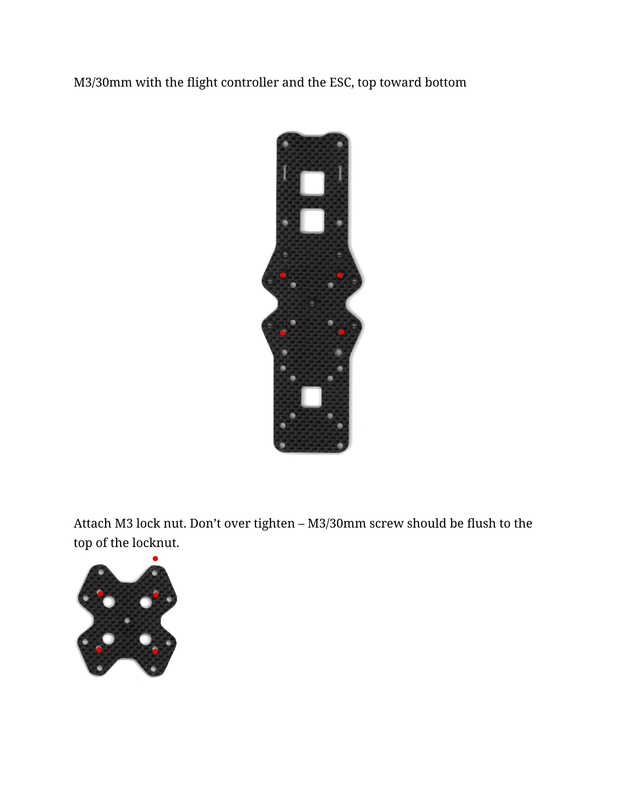

Task 5: Install the ESC and flight controller stack
Build the ARK ESC / ARK FPV flight-controller stack on the lower frame, attach the battery lead, and connect the motors to the ESC.
Day 3–4Cadet BSee blockers below
Task 5: Install the ESC and flight controller stack
Build the ARK ESC / ARK FPV flight-controller stack on the lower frame, attach the battery lead, and connect the motors to the ESC.
Blockers
Complete these tasks first before you start this page.
Not marked complete
Parts required
- Lower frame
- ARK 4-in-1 ESC
- ARK FPV flight controller
- FC/ESC stack hardware
- Custom battery lead
- 8-wire FC-to-ESC cable
Tools required
- 2.0 mm Allen key for the frame-supplied stack screws
- 5.5 mm nut driver
- Pliers for rubber isolators, if needed
This manual does not use the older TBS / JST-SH / MR30 configuration. Use only the current ARK stack hardware and the current semester wiring components.

Use this visual guide to confirm the four long frame-supplied M3 × 30 mm stack screws and the correct locknut stop point. The screw should finish approximately flush with the top of the nylon-insert locknut.
Steps
- Install the rubber mounting isolators into the ESC and flight controller mounting holes. Pull them through gently with pliers if needed, but do not tear them.
- Route the XT60 battery lead up through the rear square opening in the frame.
- Ask a faculty member for the two small screws used to attach the battery lead to the ESC power pads or terminals. Attach black to negative and red to positive.
- Orient the ESC so the battery lead exits the tail of the aircraft, with black on the left and red on the right when viewed from above in the direction of flight.
- Place the flight controller above the ESC in the current build orientation and connect the supplied 8-wire FC-to-ESC cable between the matching stack ports.
- Insert the four long frame-supplied M3 stack screws from the top, through the stack and frame, using the visual reference below to confirm the screw direction.
- Install the four M3 nylon-insert nuts underneath the frame and tighten them in a crisscross pattern with the 5.5 mm nut driver on the nuts and the 2.0 mm Allen key on the screw heads. Stop when each screw is approximately flush with the top of its locknut.
- Stop tightening as soon as the rubber isolators show visible compression. Do not crush them.
- Connect the four motor leads to the ESC and route each set of wires cleanly along its arm.
STOP! If there is any doubt about battery-lead polarity, FC/ESC cable routing, or stack orientation, stop and ask for a faculty member before power is ever applied.
Common errors
- Using the wrong tool size on the stack screws. These are M3 screws with a 2.0 mm Allen drive.
- Reversing the battery lead polarity.
- Installing the ESC backward so the battery lead exits the wrong end of the frame.
- Fully tightening one stack nut before the other three are started.
- Overcompressing the rubber isolators and defeating vibration isolation.